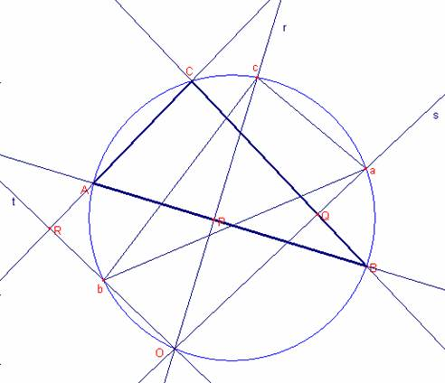
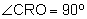

Problema 276
Problema 276
Circunferencias y tangencia
25. O es un punto sobre la circunferencia circunscrita al triángulo ABC. Demostrar que si las perpendiculares desde O a los lados AB, AC y BC cortan a la circunferencia en los puntos c, b y a, el triángulo abc es igual en todos los aspectos al ABC. [Nota del director: tienen los mismos lados y ángulos, aunque el orden es diferente]
a)Estudiar a qué transformaciones se somete ABC para transformarse en el abc, de manera que se solapen exactamente [añadido por el director].
Aref, M.N., Wernick,W. (1968): Problems &Solutions in Euclidean Geometry. Dover Publications, Inc, New York. (pag. 97)
Solución de Ricard Peiró i Estruch Profesor de Matemáticas del IES 1 de Xest (València) (2 de octubre de 2005) (en español):

Sea el triángulo
Sea la recta r que pasa por O y es perpendicular a  que corta la circunferencia en el punto c.
que corta la circunferencia en el punto c.
Sea la recta s que pasa por O y es perpendicular al  que corta la circunferencia en el punto a.
que corta la circunferencia en el punto a.
Sea la recta t que pasa por O y es perpendicular al  que corta la circunferencia en el punto c.
que corta la circunferencia en el punto c.
Sea P la intersección de la recta r y la recta AB.
Sea Q la intersección de la recta s y la recta BC.
Sea R la intersección de la recta t y la recta AC.
Consideremos el cuadrilátero ROQC

Entonces,  . Entonces, .
. Entonces, .
Entonces,  .
.
Consideremos el cuadrilátero AROP
,
Entonces,  . Entonces, .
. Entonces, .
Entonces, .
Entonces,  .
.
Por tanto los triángulos  ,
,  son iguales ya que tienen iguales los ángulos y ambos están inscritos en la misma circunferencia por tanto las cuerdas miden igual.
son iguales ya que tienen iguales los ángulos y ambos están inscritos en la misma circunferencia por tanto las cuerdas miden igual.
a) Notemos que los arcos  ,
,  son iguales.
son iguales.
Entonces, los triángulos son simétricos respecto de la mediatriz del segmento  .
.
Entonces dado el triángulo  :
:
- Dibujaremos la recta r que pasa por O y es perpendicular a
 que corta la circunferencia en el punto c.
que corta la circunferencia en el punto c. - Dibujemos la recta mediatriz m del segmento
 .
. - Dibujemos el punto a simétrico de A respecto de m.
- Dibujemos el punto b simétrico de B respecto de m.
- Dibujemos el triángulo.
Con Cabri:
Figure barroso276.fig
Applet created on 16/10/05 by Ricard Peiró with CabriJava